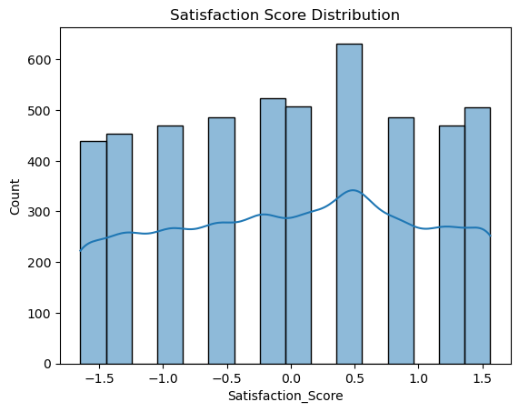
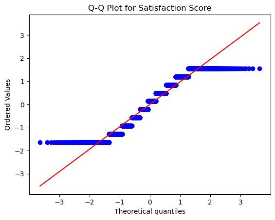
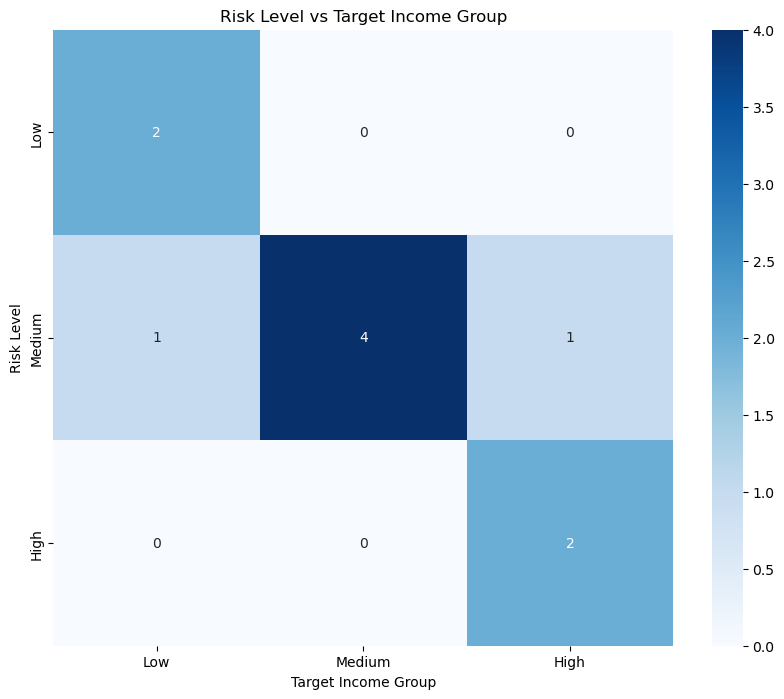
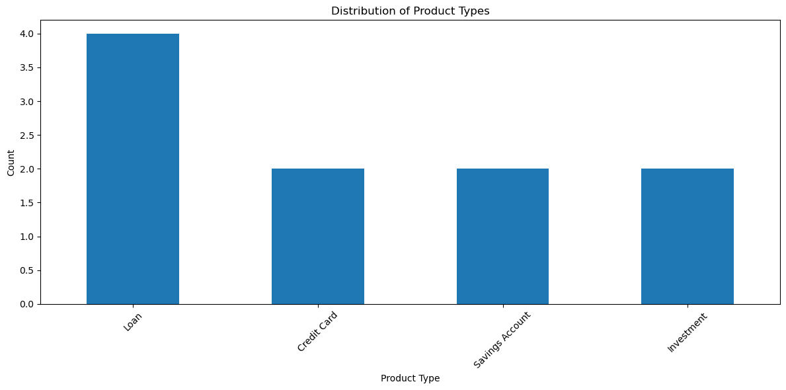
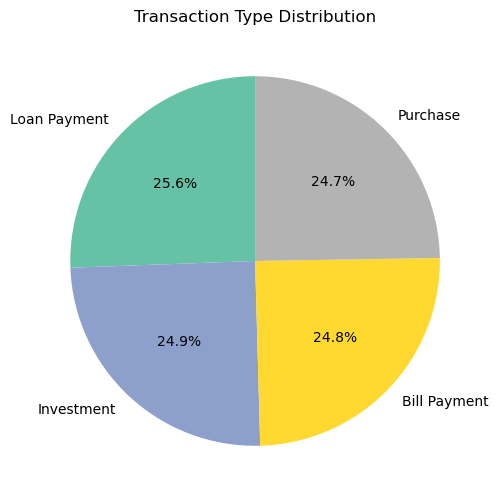
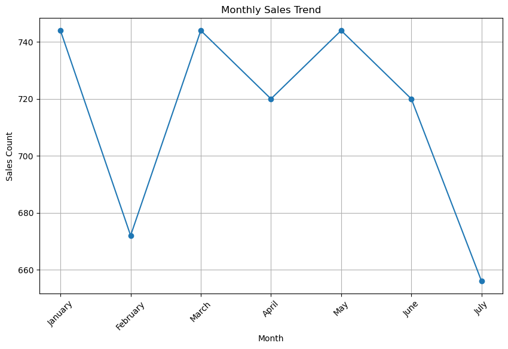
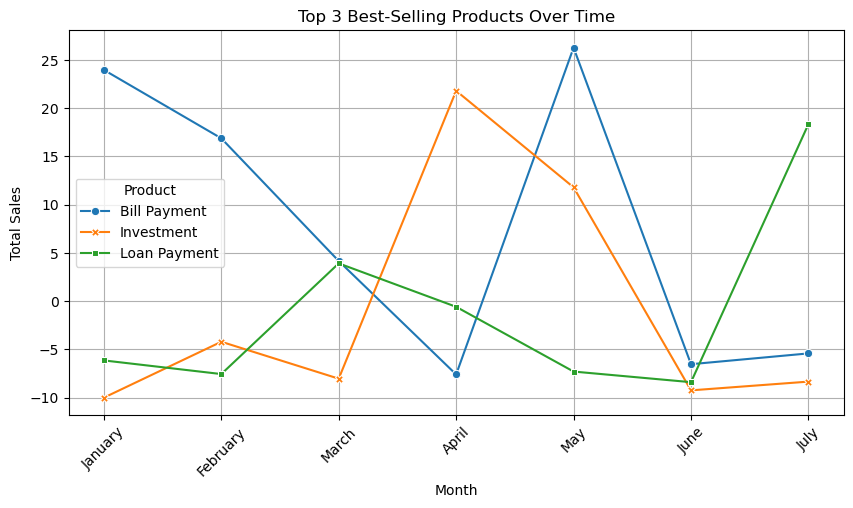
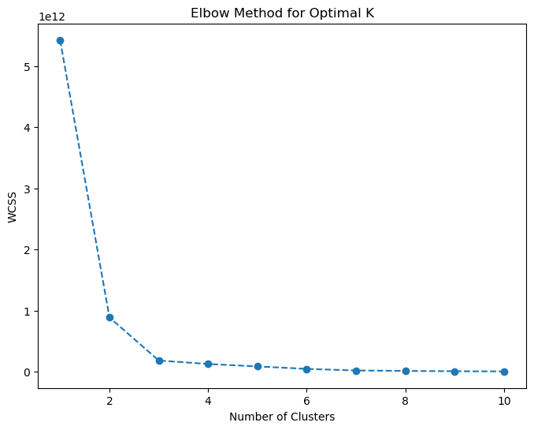
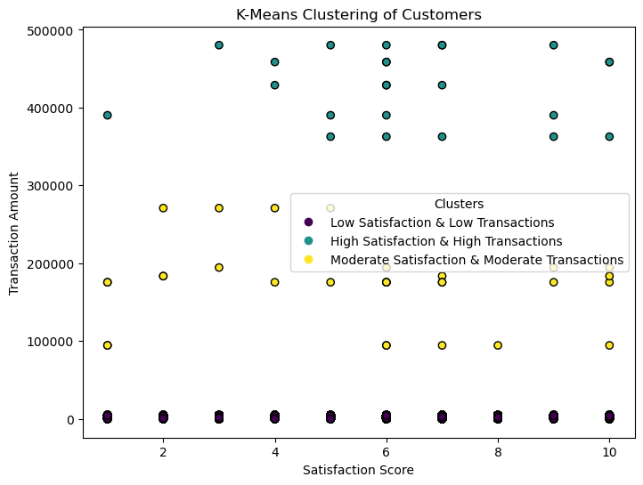

Coursework · FinMark case dataset · Python · Jupyter
FinMark: from raw data to customer segments
Cleaning, exploring and clustering three linked datasets: customers, products and transactions. Ends in K-Means segments and the recommendations that follow from them.
A course project on a practice dataset, not client work. Every figure on this page describes that dataset.
FINMARK CUSTOMERS, PRODUCTS, AND TRANSACTIONS EXPLORATORY DATA ANALYSIS
Data Loading: We began by importing multiple datasets related to customer transactions, satisfaction scores, and engagement. This step allowed us to access the necessary data for analysis.
Preview of Data: The .head() function was used to display the first few rows of each dataset. This provided insight into column names, data types, and general structure.
Missing Values Analysis: A missing value check was performed to determine if any columns had incomplete data. Identifying missing values was critical for deciding whether to impute or remove them.
Duplicate Detection and Removal: We checked for duplicate rows within the dataset. Any duplicate records found were removed to maintain data accuracy and prevent bias in analysis.
Data Skewness Check (Shapiro-Wilk Test): Skewness was examined in numerical variables, particularly transaction amounts and customer satisfaction scores. This helped assess whether the data followed a normal distribution.
Outlier Detection (Interquartile Range - IQR Method): The IQR method was applied to detect extreme values in customer-related data. Outliers can significantly impact machine learning models and summary statistics, so identifying them was essential.
Handling Missing Values: For columns with missing data, appropriate imputation techniques (such as mean, median, or mode) were applied. Since missing values were below 5%, imputing was preferred over dropping data.
Data Type Conversion: Some columns were converted to appropriate data types to facilitate analysis. For instance, dates stored as strings were transformed into datetime objects.
Descriptive Statistics: Summary statistics were generated to understand the central tendency and dispersion of numerical data. This included mean, median, standard deviation, and percentiles.
Data Visualization: Various visualizations were used to explore relationships between variables:
Histograms: Showed the distribution of numerical data.
Scatterplots & Regression Plots: Examined correlations between satisfaction scores and recommendations.
Data Normalization (Standard Scaler): To ensure all numerical data were on the same scale, we applied StandardScaler to customer and transaction data. This step was essential for improving clustering accuracy.
K-Means Clustering: K-Means clustering was applied to segment customers based on their transaction amount and satisfaction scores. The optimal number of clusters was determined using the elbow method, and results were visualized to interpret customer segments.
In this step, we import the necessary datasets into our environment using Pandas. This allows us to analyze and manipulate the data for further processing.
Product_ID Product_Name Product_Type Risk_Level \
0 1 Platinum Credit Card Credit Card Medium
1 2 Gold Savings Account Savings Account Low
2 3 High-Yield Investment Account Investment High
3 4 Mortgage Loan Loan Medium
4 5 Auto Loan Loan Medium
Target_Age_Group Target_Income_Group
0 NaN Medium
1 NaN Low
2 NaN High
3 NaN High
4 NaN Medium
In [5]
# Show headings of customersprint(customers.head())
We use .duplicated().sum() to count duplicate rows in the dataset.
Identifying duplicate records is crucial to maintain data integrity.
In [7]
# Check for duplicates in transactionsprint(transactions.duplicated().sum())print(products.duplicated().sum())print(customers.duplicated().sum())
50
5
81
5. DROPPING THE DUPLCATES
Removing Duplicate Entries
We use .drop_duplicates() on all datasets to ensure data uniqueness.
This step helps eliminate redundant records and prevents incorrect analysis.
In [8]
# Drop duplicates from all datasetstransactions.drop_duplicates(inplace=True)products.drop_duplicates(inplace=True)customers.drop_duplicates(inplace=True)
6. CHECKING FOR SKEWNESS (SHAPIRO-WILK TEST)
Checking Data Skewness (Shapiro-Wilk Test)
Skewness measures the asymmetry of data distribution.
We perform the Shapiro-Wilk test on numerical columns, such as transaction amounts, to determine normality.
If skewness is high, we may need to apply transformations or impute missing values.
In [9]
# Check for skewness using Shapiro-Wilk testshapiro_test_trans=shapiro(transactions['Transaction_Amount'].dropna())shapiro_test_cust=shapiro(customers['Satisfaction_Score'].dropna())print(f"Shapiro-Wilk test for Transaction Amount: {shapiro_test_trans}")print(f"Shapiro-Wilk test for Satisfaction Score: {shapiro_test_cust}")
Shapiro-Wilk test for Transaction Amount: ShapiroResult(statistic=0.05235368553861175, pvalue=4.807730692666409e-94)
Shapiro-Wilk test for Satisfaction Score: ShapiroResult(statistic=0.7079545690044813, pvalue=2.2627974536637874e-68)
In [40]
# Check for normality using Shapiro-Wilk test (for Satisfaction_Score column)stat,p_value=shapiro(customers['Satisfaction_Score'].dropna())# Drop NaN for the testprint(f"Shapiro-Wilk Test: Statistic={stat}, p-value={p_value}")# If p-value is less than 0.05, the distribution is not normalifp_value<0.05:print("The distribution is not normal.")# Calculate descriptive statisticsdescription=customers['Satisfaction_Score'].describe()print("\nDescriptive Statistics for 'Satisfaction_Score':")print(description)# Calculate mode valuemode_value=customers['Satisfaction_Score'].mode()[0]# Mode is the most frequent valueprint(f"\nMode of 'Satisfaction_Score': {mode_value}")# Replace missing values (NaN) with the mode of the columnmode_value=customers['Satisfaction_Score'].mode()[0]# Mode is the most frequent valuecustomers.loc[:,'Satisfaction_Score']=customers['Satisfaction_Score'].fillna(mode_value)# Check the number of missing values after replacingmissing_values=customers['Satisfaction_Score'].isna().sum()print(f"\nNumber of missing values after replacing with mode: {missing_values}")else:print("The distribution is normal.")#Visualize the distributionsns.histplot(customers['Satisfaction_Score'],kde=True)plt.title('Satisfaction Score Distribution')plt.show()#Q-Q plotfromscipyimportstatsstats.probplot(customers['Satisfaction_Score'].dropna(),dist="norm",plot=plt)plt.title('Q-Q Plot for Satisfaction Score')plt.show()
Shapiro-Wilk Test: Statistic=0.9414785964162959, p-value=1.5982944405936784e-40
The distribution is not normal.
Descriptive Statistics for 'Satisfaction_Score':
count 4.969000e+03
mean -1.286956e-17
std 1.000101e+00
min -1.646974e+00
25% -9.340361e-01
50% 1.353707e-01
75% 8.483085e-01
max 1.561246e+00
Name: Satisfaction_Score, dtype: float64
Mode of 'Satisfaction_Score': 0.4918395844455161
Number of missing values after replacing with mode: 0

Figure 1 · Satisfaction Score Distribution

Figure 2 · Q-Q Plot for Satisfaction Score
Satisfaction Score Distribution (Top):
Description: Another bar chart of satisfaction scores, with an overlaid KDE curve.
Key Insights: Similar to the first image's satisfaction distribution, showing no significant skew or clustering around extreme values.
Implication: Satisfaction scores are well-distributed.
Q-Q Plot for Satisfaction Score (Bottom):
Description: Quantile-Quantile (Q-Q) plot comparing the distribution of satisfaction scores to a normal distribution.
Key Insights: Most points align closely with the red line, indicating that satisfaction scores approximate a normal distribution.
Implication: Statistical tests assuming normality can be applied to this data.
7. IQR FOR CUSTOMER DATA
Identifying Outliers Using IQR (Interquartile Range)
The IQR method detects extreme values in numerical columns.
This helps determine if any data points should be removed or transformed.
In [11]
# < ===== Outlier Detection for Numerical Columns =====># Identify all numerical columnsnumerical_columns=customers.select_dtypes(include=['number']).columns# Iterate over each numerical column to detect outliersforcolinnumerical_columns:# Calculate IQR for the current columnQ1=customers[col].quantile(0.25)Q3=customers[col].quantile(0.75)IQR=Q3-Q1lower_bound=Q1-1.5*IQRupper_bound=Q3+1.5*IQR# Identify outlier rows for this columnoutliers=customers[(customers[col]<lower_bound)|(customers[col]>upper_bound)]# Print resultsprint(f"\nOutliers in column '{col}': {outliers}")print(f"Number of outliers in '{col}': {outliers.shape[0]}")
Outliers in column 'Customer_ID': Empty DataFrame
Columns: [Customer_ID, Satisfaction_Score, Feedback_Comments, Likelihood_to_Recommend]
Index: []
Number of outliers in 'Customer_ID': 0
Outliers in column 'Satisfaction_Score': Customer_ID Satisfaction_Score Feedback_Comments \
529 530 52.0 Good service
573 574 60.0 Good service
857 858 56.0 Very satisfied
1090 218 60.0 Good service
2451 582 51.0 Good service
3012 926 58.0 Good service
3306 503 51.0 Excellent
4131 949 53.0 Unsatisfactory
4499 934 58.0 Good service
4650 615 54.0 Unsatisfactory
Likelihood_to_Recommend
529 10
573 9
857 10
1090 1
2451 5
3012 9
3306 8
4131 7
4499 4
4650 7
Number of outliers in 'Satisfaction_Score': 10
Outliers in column 'Likelihood_to_Recommend': Empty DataFrame
Columns: [Customer_ID, Satisfaction_Score, Feedback_Comments, Likelihood_to_Recommend]
Index: []
Number of outliers in 'Likelihood_to_Recommend': 0
In [12]
# < ===== REPLACING OUTLIERS IN 'Satisfaction_Score' WITH NaN (null values) =====># < ===== Outlier Detection for Satisfaction_Score =====># Calculate IQR for 'Satisfaction_Score'Q1=customers['Satisfaction_Score'].quantile(0.25)Q3=customers['Satisfaction_Score'].quantile(0.75)IQR=Q3-Q1lower_bound=Q1-1.5*IQRupper_bound=Q3+1.5*IQR# Identify outliers in 'Satisfaction_Score'outliers=customers[(customers['Satisfaction_Score']<lower_bound)|(customers['Satisfaction_Score']>upper_bound)]# Print the number of outliers before replacementprint(f"Number of outliers in 'Satisfaction_Score' before replacement: {outliers.shape[0]}")# Replace outliers in 'Satisfaction_Score' with NaN (null values)customers.loc[(customers['Satisfaction_Score']<lower_bound)|(customers['Satisfaction_Score']>upper_bound),'Satisfaction_Score']=np.nan# Check the number of missing values after replacing outliersmissing_values=customers['Satisfaction_Score'].isna().sum()# Print the number of missing values in 'Satisfaction_Score' after replacementprint(f"Number of missing values in 'Satisfaction_Score' after replacing outliers: {missing_values}")
Number of outliers in 'Satisfaction_Score' before replacement: 10
Number of missing values in 'Satisfaction_Score' after replacing outliers: 10
8. HANDLING MISSING VALUES
We impute missing values based on statistical methods (mean, median, or mode).
If a column has too many missing values, we may consider dropping it instead.
In [13]
# Handle missing valuescustomers['Satisfaction_Score']=customers['Satisfaction_Score'].fillna(customers['Satisfaction_Score'].median())products.drop(columns=['Target_Age_Group'],inplace=True)# Dropping column with all NaN values
In [14]
# Impute missing transaction amounts (less than 5% missing)transactions['Transaction_Amount']=transactions['Transaction_Amount'].fillna(transactions['Transaction_Amount'].median())
9. CONVERTING DATA TYPES
Some columns may have incorrect data types (e.g., dates stored as strings, ID's stored as integers).
We convert these columns into their appropriate types to facilitate analysis.
In [15]
# Convert Data Types for necessary data/columnstransactions['Transaction_ID']=transactions['Transaction_ID'].astype(str)products['Product_ID']=products['Product_ID'].astype(str)customers['Customer_ID']=customers['Customer_ID'].astype(str)transactions['Transaction_Amount']=transactions['Transaction_Amount'].astype(float)customers['Satisfaction_Score']=customers['Satisfaction_Score'].astype(float)
In [16]
# Convert date column to datetime format for transactionstransactions['Transaction_Date']=pd.to_datetime(transactions['Transaction_Date'])
10. DESCRIPTIVE STATISTICS
We use .describe() to obtain summary statistics, such as mean, median, and standard deviation.
This helps us understand the distribution and spread of the data.
Customer_ID Transaction_Date Transaction_Amount
count 5000.000000 5000 5000.000000
mean 505.295400 2023-04-15 03:30:00 3089.639800
min 1.000000 2023-01-01 00:00:00 10.000000
25% 252.000000 2023-02-22 01:45:00 1260.000000
50% 509.000000 2023-04-15 03:30:00 2481.500000
75% 765.250000 2023-06-06 05:15:00 3682.000000
max 1000.000000 2023-07-28 07:00:00 480300.000000
std 291.844284 NaN 14743.714207
Satisfaction_Score Likelihood_to_Recommend
count 4969.000000 4969.000000
mean 5.620246 5.569732
std 2.805576 2.867726
min 1.000000 1.000000
25% 3.000000 3.000000
50% 6.000000 6.000000
75% 8.000000 8.000000
max 10.000000 10.000000
Product_ID Product_Name Product_Type Risk_Level \
count 10 10 10 10
unique 10 10 4 3
top 1 Platinum Credit Card Loan Medium
freq 1 1 4 6
Target_Income_Group
count 10
unique 3
top Medium
freq 4
11. FEATURE ENGINEERING OF CUSTOMERS, PRODUCTS, AND TRANSACTIONS DATA
We create new meaningful features from existing data to enhance analysis.
Examples include converting numerical scores into categories and generating customer value segments.
In [18]
#Create a new feature 'Satisfaction_Rating' based on Satisfaction_Score# This will categorize the satisfaction score into 'Low', 'Medium', and 'High' categories.defcategorize_satisfaction(score):ifscore<=3:return'Low'elifscore<=6:return'Medium'else:return'High'# Apply the function to create the new 'Satisfaction_Rating' columncustomers['Satisfaction_Rating']=customers['Satisfaction_Score'].apply(categorize_satisfaction)# Check the result of the new columnfromIPython.displayimportdisplay# Display the new featuresprint("\nSatisfaction Rating feature created:")display(customers[['Customer_ID','Satisfaction_Score','Satisfaction_Rating']])# Create a dictionary with the categories and their corresponding specific score rangescategory_table={'Score Range':['0 - 3','4 - 6','7 - 10'],'Satisfaction Rating':['Low','Medium','High']}# Convert the dictionary into a DataFrame for better readabilitycategory_df=pd.DataFrame(category_table)# Display the category tabledisplay(category_df)
Satisfaction Rating feature created:
Customer_ID
Satisfaction_Score
Satisfaction_Rating
0
1
10.0
High
1
2
3.0
Low
2
3
10.0
High
3
4
7.0
High
4
5
8.0
High
...
...
...
...
4995
169
4.0
Medium
4996
520
7.0
High
4997
963
1.0
Low
4998
926
9.0
High
4999
598
10.0
High
4969 rows × 3 columns
Score Range
Satisfaction Rating
0
0 - 3
Low
1
4 - 6
Medium
2
7 - 10
High
In [19]
# Create a new feature 'Likelihood_Category' based on Likelihood_to_Recommend# This will categorize the likelihood to recommend score into 'Low', 'Medium', and 'High' categories.defcategorize_likelihood(likelihood):iflikelihood<=3:return'Low'eliflikelihood<=7:return'Medium'else:return'High'# Apply the function to create the new 'Likelihood_Category' columncustomers['Likelihood_Category']=customers['Likelihood_to_Recommend'].apply(categorize_likelihood)# Check the result of the new columnprint("\nLikelihood Category feature created:")print(customers[['Customer_ID','Likelihood_to_Recommend','Likelihood_Category']].head())
Likelihood Category feature created:
Customer_ID Likelihood_to_Recommend Likelihood_Category
0 1 9 High
1 2 3 Low
2 3 1 Low
3 4 4 Medium
4 5 7 Medium
In [20]
#Create a new feature 'Customer_Engagement' based on the combination of Satisfaction_Rating and Likelihood_Category# For example, 'High' satisfaction and 'High' likelihood to recommend means 'Highly Engaged'customers['Customer_Engagement']=np.where((customers['Satisfaction_Rating']=='High')&(customers['Likelihood_Category']=='High'),'Highly Engaged',np.where((customers['Satisfaction_Rating']=='Medium')|(customers['Likelihood_Category']=='Medium'),'Moderately Engaged','Not Highly Engaged'))# Check the result of the new columnprint("\nCustomer Engagement feature created:")print(customers[['Customer_ID','Satisfaction_Rating','Likelihood_Category','Customer_Engagement']].head())
Customer Engagement feature created:
Customer_ID Satisfaction_Rating Likelihood_Category Customer_Engagement
0 1 High High Highly Engaged
1 2 Low Low Not Highly Engaged
2 3 High Low Not Highly Engaged
3 4 High Medium Moderately Engaged
4 5 High Medium Moderately Engaged
In [21]
#Check the new features createdprint("\nSummary of new features:")print(customers[['Customer_ID','Satisfaction_Score','Satisfaction_Rating','Likelihood_to_Recommend','Likelihood_Category','Customer_Engagement']].head())
Summary of new features:
Customer_ID Satisfaction_Score Satisfaction_Rating \
0 1 10.0 High
1 2 3.0 Low
2 3 10.0 High
3 4 7.0 High
4 5 8.0 High
Likelihood_to_Recommend Likelihood_Category Customer_Engagement
0 9 High Highly Engaged
1 3 Low Not Highly Engaged
2 1 Low Not Highly Engaged
3 4 Medium Moderately Engaged
4 7 Medium Moderately Engaged
In [22]
fromIPython.displayimportdisplay# Define a mapping for comments based on Satisfaction_Ratingrating_to_comment={'High':'Very satisfied','Medium':'Needs improvement','Low':'Unsatisfactory'}# Update the 'Feedback_Comments' column based on the 'Satisfaction_Rating'customers['Feedback_Comments']=customers['Satisfaction_Rating'].map(rating_to_comment)# Display the entire DataFrame with new featuresdisplay(customers[['Customer_ID','Satisfaction_Score','Satisfaction_Rating','Feedback_Comments','Likelihood_to_Recommend','Likelihood_Category','Customer_Engagement']])
Customer_ID
Satisfaction_Score
Satisfaction_Rating
Feedback_Comments
Likelihood_to_Recommend
Likelihood_Category
Customer_Engagement
0
1
10.0
High
Very satisfied
9
High
Highly Engaged
1
2
3.0
Low
Unsatisfactory
3
Low
Not Highly Engaged
2
3
10.0
High
Very satisfied
1
Low
Not Highly Engaged
3
4
7.0
High
Very satisfied
4
Medium
Moderately Engaged
4
5
8.0
High
Very satisfied
7
Medium
Moderately Engaged
...
...
...
...
...
...
...
...
4995
169
4.0
Medium
Needs improvement
3
Low
Moderately Engaged
4996
520
7.0
High
Very satisfied
5
Medium
Moderately Engaged
4997
963
1.0
Low
Unsatisfactory
4
Medium
Moderately Engaged
4998
926
9.0
High
Very satisfied
1
Low
Not Highly Engaged
4999
598
10.0
High
Very satisfied
10
High
Highly Engaged
4969 rows × 7 columns
In [23]
#Feature Engineering - Creating 'Product_Descriptions'defcreate_product_descriptions(product_name):descriptions={'Platinum Credit Card':'Premium credit card with high credit limit and exclusive benefits','Gold Savings Account':'High-interest savings account for substantial deposits','High-Yield Investment Account':'Investment account designed for maximizing returns','Mortgage Loan':'Long-term financing for real estate property purchase','Auto Loan':'Vehicle financing with competitive interest rates','Personal Loan':'Unsecured loan for various personal expenses','Youth Savings Account':'Savings account tailored for young customers','Retirement Investment Fund':'Long-term investment vehicle for retirement planning','Business Loan':'Financial support for business growth and operations','Travel Credit Card':'Credit card offering travel rewards and benefits'}returndescriptions.get(product_name,'Unspecified product')# Apply the function to create the new columnproducts['Product_Description']=products['Product_Name'].apply(create_product_descriptions)
In [24]
#Verify Changesprint(products)
Product_ID Product_Name Product_Type Risk_Level \
0 1 Platinum Credit Card Credit Card Medium
1 2 Gold Savings Account Savings Account Low
2 3 High-Yield Investment Account Investment High
3 4 Mortgage Loan Loan Medium
4 5 Auto Loan Loan Medium
5 6 Personal Loan Loan Medium
6 7 Youth Savings Account Savings Account Low
7 8 Retirement Investment Fund Investment High
8 9 Business Loan Loan Medium
9 10 Travel Credit Card Credit Card Medium
Target_Income_Group Product_Description
0 Medium Premium credit card with high credit limit and...
1 Low High-interest savings account for substantial ...
2 High Investment account designed for maximizing ret...
3 High Long-term financing for real estate property p...
4 Medium Vehicle financing with competitive interest rates
5 Low Unsecured loan for various personal expenses
6 Low Savings account tailored for young customers
7 High Long-term investment vehicle for retirement pl...
8 Medium Financial support for business growth and oper...
9 Medium Credit card offering travel rewards and benefits
In [25]
# Feature Engineering - Year & Month# Extract date featurestransactions['Year']=transactions['Transaction_Date'].dt.yeartransactions['Month']=transactions['Transaction_Date'].dt.strftime('%B')# Use '%B' for full month names, or '%m' for month numberstransactions
Transaction_ID
Customer_ID
Transaction_Date
Transaction_Amount
Transaction_Type
Year
Month
0
1
393
2023-01-01 00:00:00
3472.0
Purchase
2023
January
1
2
826
2023-01-01 01:00:00
2481.5
Bill Payment
2023
January
2
3
916
2023-01-01 02:00:00
10.0
Purchase
2023
January
3
4
109
2023-01-01 03:00:00
72.0
Investment
2023
January
4
5
889
2023-01-01 04:00:00
1793.0
Investment
2023
January
...
...
...
...
...
...
...
...
4995
4996
175
2023-07-28 03:00:00
2755.0
Investment
2023
July
4996
4997
338
2023-07-28 04:00:00
3555.0
Bill Payment
2023
July
4997
4998
694
2023-07-28 05:00:00
3003.0
Bill Payment
2023
July
4998
4999
940
2023-07-28 06:00:00
790.0
Purchase
2023
July
4999
5000
353
2023-07-28 07:00:00
955.0
Investment
2023
July
5000 rows × 7 columns
12. DATA VISUALIZATION
Visualizing the data
Various charts and graphs help us understand trends, distributions, and relationships between variables.
VISUALIZATION FOR CUSTOMER DATA
1. Satisfaction Score Distribution
Description: Another bar chart of satisfaction scores, with an overlaid KDE curve.
Key Insights: Similar to the first image's satisfaction distribution, showing no significant skew or clustering around extreme values.
Implication: Satisfaction scores are well-distributed.
2. Q-Q Plot for Satisfaction Score
Description: Quantile-Quantile (Q-Q) plot comparing the distribution of satisfaction scores to a normal distribution.
Key Insights: Most points align closely with the red line, indicating that satisfaction scores approximate a normal distribution.
Implication: Statistical tests assuming normality can be applied to this data.
In [26]
# Set up the figure for multiple subplotsplt.figure(figsize=(18,12))# 1. Satisfaction Score Distributionplt.subplot(2,3,1)sns.histplot(customers['Satisfaction_Score'],kde=True,color='blue')plt.title('Satisfaction Score Distribution')# 2. Satisfaction Rating Count (Fixed Warning)plt.subplot(2,3,2)sns.countplot(x='Satisfaction_Rating',data=customers,hue='Satisfaction_Rating',palette='coolwarm',legend=False)plt.title('Satisfaction Rating Count')# 3. Likelihood to Recommend Distributionplt.subplot(2,3,3)sns.histplot(customers['Likelihood_to_Recommend'],kde=True,color='green')plt.title('Likelihood to Recommend Distribution')# 4. Likelihood Category Count (Fixed Warning)plt.subplot(2,3,4)sns.countplot(x='Likelihood_Category',data=customers,hue='Likelihood_Category',palette='viridis',legend=False)plt.title('Likelihood Category Count')# 5. Customer Engagement Count (Fixed Warning)plt.subplot(2,3,5)sns.countplot(x='Customer_Engagement',data=customers,hue='Customer_Engagement',palette='Set2',legend=False)plt.title('Customer Engagement Count')# Adjust layout to avoid overlapplt.tight_layout()# Show the plotplt.show()
#Finding the correlation coeffecient for 'Satisfaction_Score' and 'Likelihood_to_Recommend'correlation_matrix=customers[['Satisfaction_Score','Likelihood_to_Recommend']].corr()print(correlation_matrix)#corr (Satisfaction_Score, Likelihood_to_Recommend) == (Likelihood_to_Recommend, Satisfaction_Score)
Description: This bar chart displays the distribution of satisfaction scores among the customers.
Key Insights: Scores are relatively balanced, with no significant skew. The overlaid line (likely a KDE curve) indicates the density, showing where most scores cluster.
Implication: Customer satisfaction appears spread across all score ranges, suggesting varied customer experiences.
2. Satisfaction Rating Count (Top-Middle):
Description: A bar chart showing the count of customers grouped by satisfaction rating (High, Medium, Low).
Key Insights: "High" ratings dominate, followed by "Medium" and then "Low."
Implication: The company is performing well overall in terms of customer satisfaction.
3. Likelihood to Recommend Distribution (Top-Right):
Description: Bar chart showing the distribution of customers’ likelihood to recommend (scale 1-10).
Key Insights: Scores are fairly uniform, with some peaks around higher values.
Implication: A significant portion of customers are likely to recommend the service, though variability exists.
4. Likelihood Category Count (Bottom-Left):
Description: A bar chart categorizing likelihood to recommend into High, Medium, and Low categories.
Key Insights: "Medium" dominates, with "Low" and "High" nearly equal.
Implication: There's room for improvement in shifting "Medium" to "High."
5. Customer Engagement Count (Bottom-Middle):
Description: Engagement levels are divided into "Highly Engaged," "Moderately Engaged," and "Not Highly Engaged."
Key Insights: The majority are "Moderately Engaged," with fewer "Highly Engaged."
Implication: Efforts can be focused on increasing customer engagement levels.
6. Satisfaction Score vs. Likelihood to Recommend (Bottom-Right):
Description: A scatter plot showing the relationship between satisfaction scores and likelihood to recommend.
Key Insights: Points are spread out, indicating no strong correlation. The red line suggests a trend.
Implication: While satisfaction influences recommendation, other factors may play a role.
VISUALIZATION FOR PRODUCTS DATA
In [28]
# Risk Level vs Target Income Group# Define the desired orderrisk_order=['Low','Medium','High']income_order=['Low','Medium','High']# Create the crosstabcross_tab=pd.crosstab(products['Risk_Level'],products['Target_Income_Group'])# Reorder the index and columnscross_tab=cross_tab.reindex(index=risk_order,columns=income_order)# Create the heatmapplt.figure(figsize=(10,8))sns.heatmap(cross_tab,annot=True,cmap='Blues',fmt='d')plt.title('Risk Level vs Target Income Group')plt.xlabel('Target Income Group')plt.ylabel('Risk Level')plt.show()

Figure 4 · Risk Level vs Target Income Group
Risk Level vs Target Income Group
The heatmap visualizes the relationship between Risk Level and Target Income Group across our financial products. Here's what we can interpret:
• Diagonal Pattern: 1. There's a clear diagonal pattern from top-left to bottom-right, suggesting a strong positive correlation between risk levels and target income groups 2. Products with low risk tend to target low-income groups 3. Products with medium risk predominantly target medium-income groups 4. High-risk products are mainly aimed at high-income groups
• Key Concentrations:
The highest concentration appears in the Medium Risk - Medium Income cell, indicating this is our most common product configuration
We see 2 products each in the Low Risk - Low Income and High Risk - High Income segments, showing a balanced approach at the extremes
• Notable Gaps:
There are no products in the High Risk - Low Income combination, which demonstrates responsible product design
Similarly, we don't see any Low Risk - High Income products, suggesting our high-income products are designed to offer higher potential returns with corresponding risk
• Business Implications:
The alignment between risk and income groups suggests a well-thought-out product strategy
The bank appears to practice responsible risk management by matching product risk levels with customers' income capacity
There's a clear focus on medium-risk, medium-income products, which likely represents the largest market segment
In [29]
# Let's also visualize the distribution of Product Typesplt.figure(figsize=(12,6))products['Product_Type'].value_counts().plot(kind='bar')plt.title('Distribution of Product Types')plt.xlabel('Product Type')plt.ylabel('Count')plt.xticks(rotation=45)plt.tight_layout()plt.show()

Figure 5 · Distribution of Product Types
Distribution of Product Types (Explanation)
Loans (4 products):
The highest category with 4 different products
Includes Mortgage Loan, Auto Loan, Personal Loan, and Business Loan
Most of these have Medium risk level and varying target income groups
Credit Cards (2 products):
Two offerings: Platinum Credit Card and Travel Credit Card
Both have Medium risk level and are targeted at Medium income groups
Each has distinct benefits (premium/exclusive benefits vs. travel rewards)
Savings Accounts (2 products):
Gold Savings Account and Youth Savings Account
Both have Low risk level and are targeted at Low income groups
Different target audiences (general vs. young customers)
Investment (2 products):
High-Yield Investment Account and Retirement Investment Fund
Both have High risk level and target High income groups
Different purposes (maximizing returns vs. retirement planning)
VISUALIZATION FOR TRANSACTIONS DATA
In [30]
# Pie Chart for Transaction Type Distributionplt.figure(figsize=(6,6))transactions['Transaction_Type'].value_counts().plot.pie(autopct='%1.1f%%',startangle=90,cmap="Set2")plt.ylabel("")# Remove y-labelplt.title("Transaction Type Distribution")plt.show()

Figure 6 · Transaction Type Distribution
Transaction Type Distribution
Loan Payments: The top category indicates that users place a high priority on repaying their debt, which may be a sign of a responsible financial attitude or a strong borrowing culture. Financial institutions can benefit from this trend, which shows a consistent need for credit management services.
Investments: A high proportion shows that users are becoming more financially aware and are actively making investments in assets that increase wealth. Financial institutions now have the chance to provide customized investment products.
Purchases and Bill Payments: These two categories are almost equal, indicating consistent consumer expenditure on necessities as well as wants. Retailers and utility companies can more precisely predict demand thanks to this stability.
In [31]
# Group by month and calculate statistics for the 'Month' columnmonthly_sales_stats=transactions.groupby('Month')['Transaction_Amount'].describe()# Sort months in calendar order (optional)monthly_sales_stats=monthly_sales_stats.reindex(['January','February','March','April','May','June','July','August','September','October','November','December'])# Display the statistics for each monthprint(monthly_sales_stats)
count mean std min 25% 50% 75% \
Month
January 744.0 3135.504032 17574.087199 10.0 1271.75 2481.50 3662.75
February 672.0 3035.272321 15021.278262 16.0 1263.25 2481.50 3578.25
March 744.0 2955.174731 9775.199441 13.0 1249.25 2443.00 3682.00
April 720.0 3232.765972 16316.270778 11.0 1292.25 2481.50 3719.50
May 744.0 3749.199597 20440.386536 10.0 1265.75 2481.50 3832.25
June 720.0 2457.652778 1413.335878 18.0 1242.50 2479.25 3598.50
July 656.0 3034.336890 14134.943328 21.0 1271.50 2496.00 3679.50
August NaN NaN NaN NaN NaN NaN NaN
September NaN NaN NaN NaN NaN NaN NaN
October NaN NaN NaN NaN NaN NaN NaN
November NaN NaN NaN NaN NaN NaN NaN
December NaN NaN NaN NaN NaN NaN NaN
max
Month
January 480300.0
February 390200.0
March 194500.0
April 428900.0
May 458600.0
June 4986.0
July 362700.0
August NaN
September NaN
October NaN
November NaN
December NaN
In [32]
# Plot count of sales for each monthmonthly_sales_stats['count'].plot(kind='line',figsize=(10,6),marker='o',title='Monthly Sales Trend')plt.xlabel('Month')plt.ylabel('Sales Count')plt.grid()plt.xticks(rotation=45)plt.show()

Figure 7 · Monthly Sales Trend
Monthly Sales Trend
Sales Volume Trends: Sales reach their highest levels in January and May, indicating increased financial activity. February and July see significant drops in transactions.
Seasonal Patterns: A drop every February shows as a seasonal pattern likely due to post-holiday spending reductions after December and January. The drop from June to July might be a sign of a seasonal decline, brought on by mid-year holidays, a slowdown in business, or consumer hesitancy before larger purchases in later months.
In [33]
# Group by month and calculate statistics for the 'Year' columnyearly_sales_stats=transactions.groupby('Year')['Transaction_Amount'].describe()# Display the statistics for each monthprint(yearly_sales_stats)
count mean std min 25% 50% 75% max
Year
2023 5000.0 3089.6398 14743.714207 10.0 1260.0 2481.5 3682.0 480300.0
In [39]
# Line graph visualization for top 3 products for each month# Group by Month and Product, then sum salesmonthly_sales=transactions.groupby(['Month','Transaction_Type'])['Transaction_Amount'].sum().reset_index()# Get the top 3 best-selling products overalltop_products=monthly_sales.groupby("Transaction_Type")["Transaction_Amount"].sum().nlargest(3).index# Filter dataset to include only these top productsfiltered_sales=monthly_sales[monthly_sales["Transaction_Type"].isin(top_products)]# Pivot table to reshape data for line plottingpivot_table=filtered_sales.pivot(index="Month",columns="Transaction_Type",values="Transaction_Amount")# Sort months if needed (assuming months are strings like "January", "February", etc.)month_order=["January","February","March","April","May","June","July","August","September","October","November","December"]pivot_table=pivot_table.reindex(month_order)# Plot the line graphplt.figure(figsize=(10,5))sns.lineplot(data=pivot_table,markers=True,dashes=False)# Titles and labelsplt.title("Top 3 Best-Selling Products Over Time")plt.xlabel("Month")plt.ylabel("Total Sales")plt.xticks(rotation=45)# Rotate x-axis labels for better readabilityplt.legend(title="Product")# Add legend for product namesplt.grid(True)plt.show()

Figure 8 · Top 3 Best-Selling Products Over Time
The Top 3 Products and their Sales Each Month
Bill Payments show two major peaks in January and May, with notable drops between these months, reflecting when consumers typically handle their financial obligations.
Investment Sales reach their highest point in April, possibly driven by tax season and financial planning activities, followed by a decline in subsequent months.
Loan Payments begin at a low level and steadily rise until reaching their peak in July, indicating a preference for mid-year loan settlements. These patterns help businesses anticipate customer behavior and plan their services accordingly throughout the year.
1. Customers Data (K-Means Clustering of Feedback_Comments)
13. DATA NORMALIZATION (STANDARDSCALER ON TRANSACTIONS & CUSTOMERS)
Normalizing data using StandardScaler
Standardization ensures all numerical features are on the same scale, improving the performance of clustering algorithms.
In [35]
# Normalization using Standard Scalerscaler=StandardScaler()transactions[['Transaction_Amount']]=scaler.fit_transform(transactions[['Transaction_Amount']])customers[['Satisfaction_Score']]=scaler.fit_transform(customers[['Satisfaction_Score']])
print("Data preprocessing and clustering completed successfully.")
Data preprocessing and clustering completed successfully.
14. Clustering
In data mining, clustering is known as the technique of grouping similar data points together based on their features and characteristics. It can also be referred to as the process of creating clusters, or the grouping of a set of objects for objects in the same group to be more similar to each other than those in other groups.
K-Means Clustering
In [38]
# Load datasetsdf_feedback=pd.read_csv("Customer Feedback for Clustering.csv")df_transactions=pd.read_csv("Transactions Data for Clustering.csv")# Merge datasets on Customer_IDdf_merged=pd.merge(df_feedback,df_transactions,on="Customer_ID")# Select relevant columns for clusteringX=df_merged[["Satisfaction_Score","Transaction_Amount"]]# Determine the optimal number of clusters using the Elbow Methodwcss=[]k_values=range(1,11)forkink_values:kmeans=KMeans(n_clusters=k,random_state=42,n_init=10)kmeans.fit(X)wcss.append(kmeans.inertia_)# Plot the Elbow Methodplt.figure(figsize=(8,6))plt.plot(k_values,wcss,marker='o',linestyle='--')plt.xlabel('Number of Clusters')plt.ylabel('WCSS')# Within-cluster sum of squaresplt.title('Elbow Method for Optimal K')plt.show()# Apply K-Means clustering (3 clusters)kmeans=KMeans(n_clusters=3,random_state=42,n_init=10)kmeans.fit(X)clusters=kmeans.labels_df_merged["KMeans Cluster"]=clusters# Add cluster labels to the datasetcluster_mapping={0:"Low Satisfaction & Low Transactions",1:"High Satisfaction & High Transactions",2:"Moderate Satisfaction & Moderate Transactions"}df_merged["Cluster Label"]=df_merged["KMeans Cluster"].map(cluster_mapping)# Plot the K-Means clustersplt.figure(figsize=(8,6))scatter=plt.scatter(df_merged["Satisfaction_Score"],df_merged["Transaction_Amount"],c=clusters,cmap='viridis',edgecolors='black')plt.xlabel("Satisfaction Score")plt.ylabel("Transaction Amount")plt.title("K-Means Clustering of Customers")# Add custom cluster labels to the legendhandles,_=scatter.legend_elements()plt.legend(handles,cluster_mapping.values(),title="Clusters")plt.show()plt.show()

Figure 9 · Elbow Method for Optimal K

Figure 10 · K-Means Clustering of Customers
Customer Segmentation Using K-Means
In this analysis, we performed customer segmentation using both K-Means Clustering and Hierarchical Clustering based on Satisfaction Score and Transaction Amount. These clustering techniques helped us identify distinct customer groups, providing insights into their purchasing behavior.
Determining the Optimal Number of Clusters (Elbow Method)
Before applying K-Means, we used the Elbow Method to determine the optimal number of clusters. This method involves calculating the Within-Cluster Sum of Squares (WCSS) for different values of k and plotting the results. The point where the WCSS curve starts flattening out (forming an "elbow") indicates the ideal number of clusters.
From our analysis, we identified that three clusters best represented the dataset.
Applying K-Means Clustering
Once the optimal number of clusters was determined, we implemented K-Means Clustering, which assigned customers into three distinct groups based on their Satisfaction Score and Transaction Amount.
After analyzing the results, we mapped the clusters as follows:
Low Satisfaction & Low Transactions (Purple) – Customers with low satisfaction scores and low transaction amounts.
Moderate Satisfaction & Moderate Transactions (Yellow) – Customers with moderate satisfaction scores and moderate transaction amounts.
High Satisfaction & High Transactions (Teal) – High-value customers with both high satisfaction scores and high transaction amounts.
During the clustering process, we encountered an issue where the numerical labels assigned by K-Means did not match the expected customer groups. To resolve this, we manually mapped the clusters based on the data distribution to ensure proper categorization.
We then visualized the clusters using a scatter plot, where each customer was plotted based on their satisfaction score and transaction amount, with colors representing the assigned clusters.
15. Recommendations
Recommendations Based on K-Means Clustering
Based on the K-Means Clustering analysis conducted on customer satisfaction scores and transaction amounts, we propose the following recommendations to optimize customer engagement and business strategies:
Targeted Customer Retention Strategies
For the Low Satisfaction & Low Transactions (Purple) group, implement customer feedback surveys to identify pain points and introduce loyalty incentives to encourage engagement.
Consider offering promotional discounts, personalized recommendations, or improving customer service to enhance satisfaction levels and increase transactions.
Optimizing Customer Experience for Moderate Users
The Moderate Satisfaction & Moderate Transactions (Yellow) group represents customers with stable engagement. Enhance their experience through exclusive membership perks, tiered rewards programs, and targeted promotions to encourage higher spending.
Monitor their behavior closely to prevent churn and encourage movement into the high-value customer segment.
Maximizing Value from High-Value Customers
The High Satisfaction & High Transactions (Teal) group consists of loyal, high-value customers. Strengthen their relationship by providing VIP programs, early access to new products, and priority customer service.
Use their feedback to improve business offerings and maintain brand loyalty, ensuring they remain engaged over time.
Refining Marketing Strategies
Leverage clustering insights to create personalized marketing campaigns that cater to each segment's unique needs.
Utilize predictive modeling to anticipate shifts in customer behavior and proactively address potential concerns.
Further Data Analysis and Monitoring
Regularly update clustering models with new transaction and satisfaction data to ensure accurate segmentation.
Explore additional features (e.g., product preferences, frequency of transactions) to enhance clustering effectiveness.